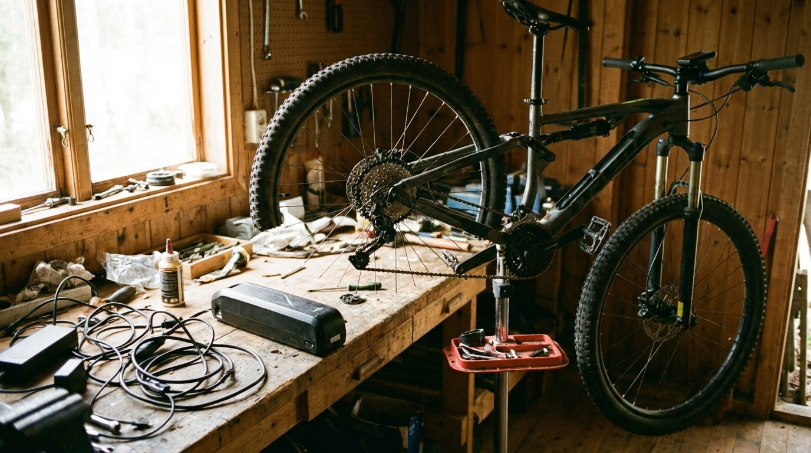
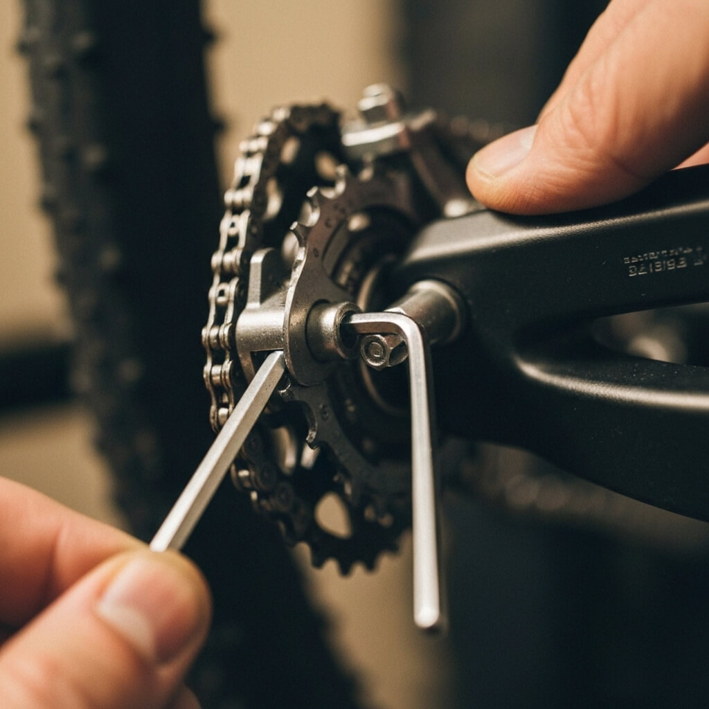
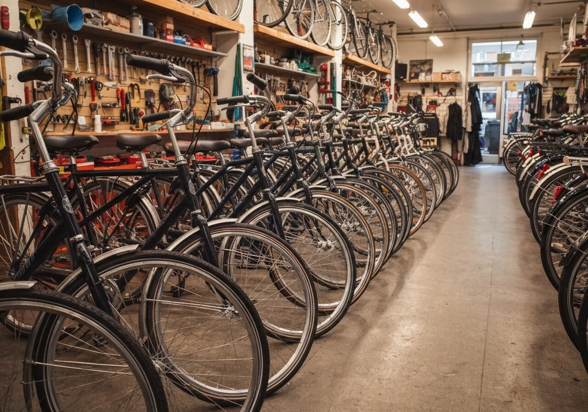

E-bikes
De 5 Belangrijkste Reparatiesscreenings Na Uw 40e
Welke onderzoeken zijn echt nodig naarmate u ouder wordt? Onze artsen geven helder advies.
Deskundige artikelen over preventie, behandelingen en alles wat bijdraagt aan een gezonder leven.

Welke onderzoeken zijn echt nodig naarmate u ouder wordt? Onze artsen geven helder advies.

Een eerlijke vergelijking van de twee populairste cosmetische behandelingen, door onze cosmetisch arts.

Eenvoudige oefeningen die u achter uw bureau kunt doen om rugklachten te verlichten.

Leer de ABCDE-regel en weet wanneer een moedervlek professionele aandacht verdient.

Onze oogarts legt uit hoe langdurig beeldschermgebruik uw ogen beinvloedt en wat u ertegen kunt doen.

Cholesterol, bloedsuiker, leverwaarden — onze huisarts legt de belangrijkste waarden uit in duidelijke taal.
Ons team staat voor u klaar. Neem contact op voor een afspraak of vrijblijvend advies.
Plan Uw Afspraak